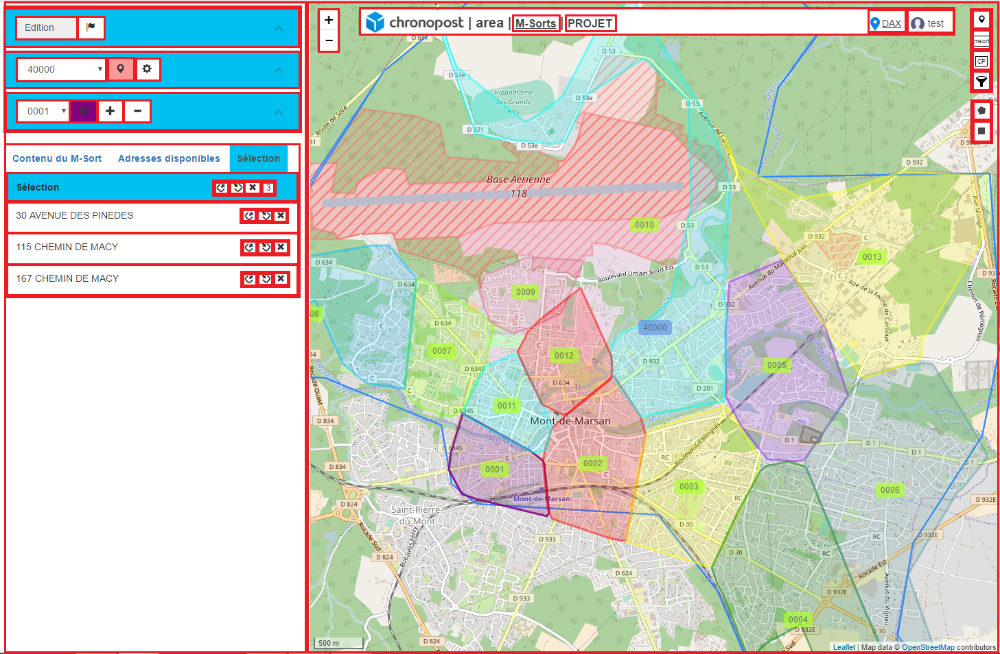
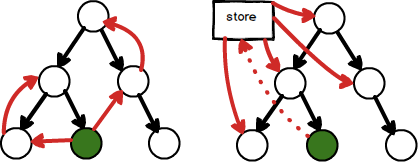

React
React
 React
React
#ES6


Objectifs
Versions
"react": "17.0.1"Le programme !
-
ES6/7
- ES6/7
- Programmation fonctionnelle
-
ReactJS
- Principes de base
- Composants
- Gestion de la donnée
- Redux
- Tests
- Routing
- Optimisations
EcmaScript 6/7
var, let, const
let foo = 'bar'
const MAX = 10
const ttc = addTva(15)
let vs. const ? 0 var, 44 let, 997 const
var, let, const
if (true) {
var i = 1
} else {
var j = 2
}
console.log(i, j)
const user = {}
user.name = 'john' // (1)
user = {name: 'lea'} // (2)
const arr = ['a']
arr.push('b') // (3)
arr = ['a', 'b'] // (4)
Arrow functions
function addOldSchool(a, b) {
return a + b
}
const add = (a, b) => {
return a + b
}
const add = (a, b) => a + b
Arrow functions
const squares = [0, 1, 2, 3, 4].map(x => x * x)
console.log(squares)
Attention !
Tout n'est pas encore supporté par les navigateurs
- Polyfill (Array.flatMap(), Array.reduce(), ...)
- Transpiler (=>, let, const, ...)
Immutabilité !
Ne mutez pas pendant la formation, s'il vous plaît.
Spread operator
const user = {
firstname: 'john',
nickname: 'ninja',
lastname: 'doe',
age: 21
}
const updatedUser = {...user, firstname: 'toto'}
console.log(updatedUser) // ?
Spread operator
const odd = [1, 3, 5, 7, 9]
const even = [2, 4, 6, 8]
const all = [0]
// arr.push([element1[, ...[, elementN]]])
all.push(odd)
all.push(even)
console.log(all) // ?
Spread operator
const odd = [1, 3, 5, 7, 9]
const even = [2, 4, 6, 8]
const all = [0]
// arr.push([element1[, ...[, elementN]]])
for (let i = 0; i < odd.length; i++) {
all.push(odd[i])
}
for (let i = 0; i < even.length; i++) {
all.push(even[i])
}
console.log(all) // ?
Spread operator
const odd = [1, 3, 5, 7, 9]
const even = [2, 4, 6, 8]
const all = [0, ...odd, ...even]
Destructuring
const foo = {a: 1, b: 2, c: 'bar'}
const {a} = foo
console.log(a) // ?
Destructuring
const user = {
firstname: 'john',
nickname: 'ninja',
lastname: 'doe',
age: 21
}
function getUserName(user) {
return `${user.firstname} ${user.lastname}`
}
console.log(getUserName(user))
function getUserName({firstname, lastname}) {
return `${firstname} ${lastname}`
}
const getUserName = ({firstname, lastname}) =>
`${firstname} ${lastname}`
Destructuring - nested
const user = {
firstname: 'john',
lastname: 'doe',
address: {
street: 'avenue des champs élysées',
num: '12'
}
}
function getUserAddress(user) {
return `${user.address.num} ${user.address.street}`
}
const getUserAddress = ({address: {num, street}}) =>
`${num} ${street}`
Destructuring - alias
const user = {
firstname: 'john',
lastname: 'doe',
address: {
street: 'avenue des champs élysées',
num: '12'
}
}
const getUserAddress = ({address: {num: foo, street: bar}}) =>
`${foo} ${bar}`
Destructuring - arrays
const maths = [x => x + 1, x => x * x, x => x * x * x]
const [plus1, square] = maths
plus1(41) // 42
square(12) // 144
Shorthand Notation
const foo = 42
const bar = 1
const longer = {
foo: foo,
bar: bar
}
const shorter = {
foo,
bar
}
Promesses VS. async - await
axios.get('/users/42/items')
.then(resp => resp.data)
.then(items => items.map(item => item.id))
.then(ids => {/* use the ids */})
.catch(error => console.log(error.toString()))
async function fetchItems {
try {
const response = await axios.get('/users/42/items')
const items = response.data
const itemIds = items.map(item => item.id))
/* use the ids */
} catch(error){
console.log(error.toString())
}
}
Promesses VS. async - await
axios.get('/users/42/items')
.then(({data : items})) => items.map(item => item.id))
.then(ids => {/* use the ids */})
.catch(error => console.log(error.toString()))
async function fetchItems {
try {
const {data: items} = await axios.get('/users/42/items')
const itemIds = items.map(item => item.id))
/* use the ids */
} catch(error){
console.log(error.toString())
}
}
Rappels - currying
const add = function(x) {
return function(y) {
return x + y
}
}
add(2)(3) // ???
const add2 = add(2)
add2(3) // = ?
const add = x => y => x + y // WTF ?!
const add = x =>
y => (x + y)
// easy !
Rappels - this
function f() {
this.foo // what is this ?
}
Tout est composant
Hello world
Hello.js
const Hello = (props) => Hello {props.name} !
export default Hello
index.js
import ReactDOM from "react-dom"
import Hello from "./Hello"
ReactDOM.render(
<Hello name="world"/>,
document.getElementById('root')
)
JSX
(props) => (
<li className="contact">
<h2 className="contact-name">{props.name}</h2>
</li>
)
(props) => React.createElement('li', {className: 'contact'},
React.createElement('h2',
{className: 'contact-name'}, props.name)
)
)
TP-01
Hello World
- Installer l'environnement
- Ecrire le composant Hello
Type checking
On peut ne rien faire, utiliser Typescript , Flow, Reason, ou les PropTypes
import PropTypes from 'prop-types'
const Hello = ({name}) => Hello {name}!
Hello.propTypes = {
name: PropTypes.string.isRequired,
truc: PropTypes.bool
}
types: array, bool, func, number, object, string, shape, node, arrayOf(), ... https://reactjs.org/docs/typechecking-with-proptypes.html
Attributs dans les composants
const Counter = () => {
let count = 0
return <div onClick={() => count = count + 1}>
Count: {count}
</div>
}
State
const ComponentWithState = (props) => {
const [count, setCount] = useState(0)
const [user, setUser] = useState(null)
const [color, setColor] = useState('green')
return ...
}
State
Pour mettre un état par défaut, on passe un paramètre à useState()
const [count, setCount] = useState(42)
Mettre à jour un état
const [count, setCount] = useState(0)
setCount(10)
setCount(prevState => prevState + 1)
Récupérer l'état courant
const [count, setCount] = useState(0)
count
State
const Counter = () => {
const [count, setCount] = useState(0)
return <div onClick={() => setCount(prev => prev + 1)}>
Count: {count}
</div>
}
Props vs State
Props
- Données passées par le composant parent
State
- Données modifiées par l'utilisateur (clics, saisies, ...)
- Données récupérées d'un web service
- Faire un maximum de composants sans état
Données dérivées des props(Faire ca dans le composant directement)Composants
Class components
class ButtonApp extends React.Component {
state = {count: 0}
render() {
return <div>
<div>{this.props.title}</div>
<button>{this.props.label}</button>
<div>{this.state.count}</div>
</div>
}
}
Itérer sur un tableau
const MyComponent = (props) => (
<ul>
{
props.items.map(item =>
<li key={item.id}>{item.label}</li>)
}
</ul>
)
useEffect
Déclenche un traitement lorsque des données (issues des props ou des states) changent
const UserDetails = ({userId}) => {
const [details, setDetails] = useState(null)
useEffect(() => {
axios.get('/users/' + userId)
.then(({data}}) => setDetails(data)
}, [userId])
return <div>...
}
TP-02
Shopping list
- Afficher le titre passé par le parent
- Mettre un état par défaut (liste vide)
- Mettre la liste des items retournée par l'appel au web service
- Afficher les items dans une liste <ul></ul>
- Créer un composant dédié pour chaque élément de la liste <li>
- Bonus: Créer un composant qui fait l'appel ajax, et passe le résultat à un composant enfant, qui lui itère sur la liste.
Bonus TP-02
const ShoppingList = ({title}) => {
const [items, setItems] = useState([])
// useEffect({...}, [])
return <ShoppingListInternal title={title}
items={items}/>
}
const ShoppingListInternal = ({title, items}) =>
<div>
<h2>{title}</h2>
<ul>{items.map(item =>
<ShoppingItem key={item.id} item={item}/>)}
</ul>
</div>
Passer des fonctions dans les props
const ShoppingList = ({title}) => {
const [items, setItems] = useState([])
// useEffect({...}, [])
const deleteItem = (itemIdToDelete) => {
setItems(prev => prev.filter(item => item.id !== itemIdToDelete)
}
return (<ShoppingListInternal
title={title}
items={items}
del={deleteItem}/>)
}
}
Utiliser les fonctions des props
const ShoppingListInternal = ({title, items, del}) => (
<div>
<h2>{title}</h2>
<ul>
{
items.map(item => (<li onClick={() => del(item.id)}>
{item.label}: {item.price}€ </li>))
}
</ul>
</div>)
Récupérer l'évènement JS
const ClickableApp = () => {
const handleClick = e => {
console.log('click !', e)
}
return <div onClick={handleClick}>Click me !</div>
}
const ClickableApp = () => (
<div
onClick={e => console.log('click !', e)}>
Click me !
</div>
)
Avec du style
inline style vs css
Pourquoi ne pas inliner le css dans le js ?
MyComponent = () => {
const mystyle = {backgroundColor: '#F0ABCD'}
return <div style={mystyle}/>
}
Ou utiliser une css globale, une css par composant (css modules avec Webpack)
import './MyComponent.css'
Ant Design
React Components for desktop applications
<Button type="primary" onClick={handleClick}>Go!</Button>
Documentation
Material-UI
React components that implement Google's Material Design
<Button onClick={handleClick}>Go!</Button>
Documentation
Styled-Components
Visual primitives for the component age.
const Title = styled.h1`
font-size: 1.5em;
text-align: center;
color: palevioletred;
`
<Title>Nice title !</Title>
Documentation
Tips and tricks
(Workarounds)
Fragments
const ComponentWithFragment = () => (
<>
<div>Les</div>
<span>fragments</span>
</>
)
JSX if (else)
if
{user && {user.login}}
not
{user || No User}
if-else
{user
? {user.login}
: No User}
Commentaires
const MyComponent = () => {
// comment inside JS
return <div>
{/* Comment inside JSX */}
</div>
}
Children
ReactDOM.render(
<ButtonApp title="My Application">Press Me! </ButtonApp>,
document.getElementById('root')
)
export const ButtonApp = ({title, children}) => {
return <div>
<div>{title}</div>
<button>{children}</button>
</div>
}
TP-03
Liste des étudiants
- Créer un champ "input" qui filtre les éléments de la table
- Afficher le nom de l'étudiant sélectionné (Celui sur lequel on a cliqué), ou un message si aucun étudiant n'est sélectionné (par défaut)
- Bonus : Faire une Pull Request pour faire une jolie correction à ce TP ;)
Ce qu'on a vu jusque là
- Un composant a des props et des états (states)
- Un composant sans états est plus simple à écrire (et donc plus maintenable)
Flux & Redux
Flux
- Store: Stocker la donnée
- Action: Mettre à jour le model
- Dispatcher: Aiguiller les actions dans les stores
- View: Composants UI

Le flux est unidirectionel ! (2-way binding)
Bad Practice vs. Good Practice
- On ne met pas à jour les composants directement
- On peut utiliser le store (redux), les stores (flux), les services (RxJs Subjects ), ...
Redux
Actions
{type: 'INCREMENT', inc: 3}
{type: 'ADD_TODO', text: 'Buy bread'}
{type: 'SET_USER', user: new User(1, 'toto')}
Action Creator
export const incrementor = (inc) => {
return {type: 'INCREMENT', inc}
}
export const incrementor =
(inc) => ({type: 'INCREMENT', inc})
Redux
const userId = window.current_account.id
« Pourquoi utiliser Redux alors qu'on a déjà les variables globales ? »
#TROLL
Redux
- Store unique (plus simple pour l'isomorphisme / SSR)
- Le state du store est read-only
- On dispatch des actions pour mettre à jour le state (du store)
- Les actions sont envoyées aux reducers
- Les reducers sont des fonctions pures
- Les Reducers prennent un état et une action en paramètre
- et retournent un nouvel état dans un objet 'immutable'
Reducer
export const display = (state = 0, action) => {
switch (action.type) {
case 'INCREMENT':
return state + action.inc
case 'DECREMENT':
return state - action.inc
default:
return state
}
}
React & Redux
Composition de Reducers
Approche naïve
const initialState = {user: '', counter: 0}
export const myGlobalReducer =
(state = initialState, action) => {
switch (action.type) {
case 'SET_USER':
return {...state, user: action.user}
case 'INCREMENT':
return {...state, counter: state.counter + 1}
case 'DECREMENT':
return {...state, counter: state.counter - 1}
default:
return state
}
}
Composition de reducers
export const user =
(state = null, action) => {
switch (action.type) {
case 'SET_USER':
return action.user
default:
return state
}
}
export const counter =
(state = 0, action) => {
switch (action.type) {
case 'INCREMENT':
return state + 1
case 'DECREMENT':
return state - 1
default:
return state
}
}
Composition de reducers
Effet Wahou
const init = {user: 'nobody', counter: 0}
export const myGlobalReducer = (state = init, action) =>
({
user: user(state.user, action),
counter: counter(state.counter, action)
})
Et avec un peu de magie...
import { combineReducers } from 'redux'
export const myGlobalReducer = combineReducers({
user,
counter
})
Rappels
- Actions
- Reducers
- Store
- Composants React
- Maintenant il fault lier les composants au store
Les Hooks redux
- Séparation des responsabilités: UI vs tuyauterie
- Le code technique est fait dans les hooks
Hooks
useSelector
import { useSelector } from 'react-redux'
export const MyComponent = () => {
const foo = useSelector(state => state.foo)
return <div>{foo.id} / {foo.info} </div>
}
useDispatch
import { useDispatch } from 'react-redux'
export const MyComponent = () => {
const dispatch = useDispatch()
return <div onClick={() => dispatch({type: 'INC', inc: 1})}>
Click !
</div>
}
Connected component
export const SelectPostalCode = () => {
const dispatch = useDispatch()
const currentPc = useSelector(state => state.currentPc)
const postalCodes = useSelector(state => state.postalCodes)
const handleOnChange = e => {
const action = setCurrentPc(e.target.value)
dispatch(action)
}
<select onChange={handleOnChange} value={currentPc}>
{
postalCodes.map(pc =>
<option key={pc} value={pc}>{pc}</option> )
}
</select>
)
Passer le store à l'application
Tous les composants "redux" de l'application doivent avoir accès au store.
import ReactDOM from 'react-dom'
import {Provider} from 'react-redux'
import {createStore} from 'redux'
import {reducer} from './reducers/index'
import {App} from './components/app'
const store = createStore(reducer)
ReactDOM.render(
<Provider store={store}>
<App/>
</Provider>,
document.getElementById('app')
)
TP-04
Shopping list - bis
- Installer redux-dev-tools
- Comme le TP-02, mais utiliser le state du store plutot que le state du composant, et initialiser la liste (avec un morceau de code synchrone).
- Creer un action creator setItems qui retourne une ItemAction
- Créer un reducer items qui prend une ItemAction en entrée
- Créer un global reducer grâce à combineReducer
- Lier le composant au store
- Bonus: Créer un boutton qui ajoute un nouvel item à la liste
Actions asynchrones
Jusque là
- Redux permet de ne dispatcher que des objets (les actions)
- redux-thunk, redux-saga, mobx permettent de dispacher des fonctions, et donc des actions asynchrones ou des actions avec des conditions. Ces librairies sont des middlewares.
redux-thunk
Configuration
import {reducer} from './reducers/index'
import {createStore, applyMiddleware} from 'redux'
import thunk from 'redux-thunk'
const store = createStore(
reducer,
applyMiddleware(thunk)
)
ThunkActionCreator
function incrementCreator(inc) {
return {
type: 'INCREMENT_COUNTER',
inc: inc
}
}
function incrementAsyncCreator(inc) {
return dispatch => setTimeout(
() => dispatch(incrementCreator(inc)),
1000)
}
Pour résumer
Une ThunkAction est une fonction qui prend dispatch() and getState() comme paramètres, et qui retourne le résultat de l'appel à dispatch().
Example
const getItems =
(userId) => axios.get('users/' + userId + '/items')
.then(resp => resp.data)
.catch(error => console.log(error.toString()))
export const fetchItems = () =>
(dispatch, getState) => getItems(getState().userId)
.then(items => dispatch({type: 'SET_ITEMS', items: items}))
.catch((error) => console.log(error))
export const UserItems = () => {
const dispatch = useDispatch()
handleClick = () => {
const action = fetchItems()
dispatch(action)
}
return ...
}
TP-05
Shopping list - ter
- Configurer le "thunk" Middleware dans index.js
- Comme le TP-04 mais avec un appel asynchrone (http) pour charger la liste des items
- Bonus: Créer une action qui applique un taux de TVA, lorsque l'on ajoute un nouvel élément
Bravo !
C'était la partie la plus compliquée !
On sait créer des composants et leur passer des données
- Depuis le composant parent
- Depuis le LocalState
- Depuis le store
- Depuis un grand(n)-parent grâce au context...
Context
Context API
- On peut passer des données aux composants enfant (partout dans la hiérarchie).
- Beaucoup de librairires sont basées la dessus. Ce n'était pas une API officielle avant Mars 2018.
- react-redux fonctionne grâce à ça, le store est passé à tous les composants.
Context API
Créer un Context, et encapsuler l'application à l'interieur du <Context.Provider>
const Context = React.createContext()
export default Context
...
return <Context.Provider
value={{color: 'purple', user: new User(1, 'admin')}}>
<App/>
</Context.Provider>
Context API
Ensuite on récupère le context là ou l'on veut l'utiliser avec le hook useContext()
import {useContext} from 'react'
import MyContext from './Context'
const MyComponent = () => {
const ctx = useContext(MyContext)
return <div style={{backgroundColor: ctx.color}}>
Some text
</div>
}
}
TP-06
Context API
L'objectif et de passer une couleur et un utilisateur d'un composant parent à un composant 'petit-fils'
- Encapsuer un composant React (Large) dans un Context, avec un User et une couleur.
- Afficher les données du context dans un composant (petit-)enfant (Small)
Tests
Jest, Enzyme, React Test Renderer, React Testing Library, ...
L'idées est de tester les composants, avec leurs états et leurs props.
L'arrivée des hooks a fait bouger la hiérarchie des outils de test.
- Enzyme: les Hooks ont mis un moment à être supportés
- React test renderer: Pas de façon simple de tester les évènements
- React testing library: Des nouveaux paradigmes sur la façon de tester
Faire le rendu d'un composant
import { render } from '@testing-library/react'
describe('MyComponent', () => {
it('should work !', () => {
render(<MyComponent/>)
})
})
Tester le rendu d'un composant et ses sous-composants, avec les snapshots
import { render } from '@testing-library/react'
it('renders App and its sub components', () => {
const { container } = render(<App />)
expect(container).toMatchSnapshot()
})
Assertions Jest
it('tests', () => {
expect(1 + 1).toEqual(2)
expect(['a', 'b']).toHaveLength(2)
expect(0 / 2).not.toBeNaN()
})
.toEqual(value), .toBeNull(), .toBeTruthy(), .toHaveLength(number), .not.toBeNaN(), ...
Tester le rendu avec des sélecteurs
it('should display user infos and winner', () => {
// Given
const { container } = render(<Podium first={player4}
second={player16}
third={player2} />)
const playerInfos = container.querySelector('.infos')
const winner = container.querySelector('#winner')
// Then
expect(playerInfos).toHaveLength(3)
expect(winner.textContent).toMatch('player4')
})
Rechercher des éléments avec les Queries RTL
import {render, screen} from '@testing-library/react'
it('renders Alarm', () => {
render(<App/>)
expect(screen.getByText('Menu Alarme')).toBeTruthy()
expect(screen.getAllByTestId('alarme')).toHaveLength(2)
expect(screen.getAllByRole('button')).toHaveLength(2)
})
Vérifier qu'une méthode a été appelée
const mockFunction = jest.fn()
expect(mockFunction).toHaveBeenCalledWith(42)
Simuler des événements
import {render, fireEvent, screen } from '@testing-library/react'
it('fires events', () => {
render(<NiceInput />)
const input = screen.getByRole('input')
fireEvent.change(input, {target: {value: 'new text'}})
})
Async testing
import { render, screen } from '@testing-library/react'
it('loads data on creation', async () => {
render(<UserInfo id={42} />)
await screen.getByText('Jennifer')
// expect(...)
})
Mocking avancé avec Jest - functions
import { render, screen } from '@testing-library/react'
jest.mock('api/users', () => ({
fetchUser: userId =>
Promise.resolve(new User(userId, 'Jennifer')),
}))
describe('UserInfo Component', async () => {
it('should display user ', () => {
render(<UserInfo id={42} />)
await screen.getByText('Jennifer')
// expect...
}
})
Run tests
- npm test in command line
- --coverage for test coverage
- jest runner in Webstorm / IntelliJ
TP-07
Tests
L'objectif est d'écrire les tests du TP-03
- Créer un fichier .test.js pour chaque composant
- StudentDetails: Vérifier les textes (avec Student null ou non)
- Filter: Verifier que le callback est appelé quand l'évènement change est propagé
- StudenstTable: Vérifier le nombre de ligne dans le tableau, suivant le jeu de données. Tester les appels aux callbacks aussi.
- StudentsApp: Vérifier que les composants sont toujours affichés de la même façon (avec un snapshot) . Tester que filteredStudents() retourne une liste filtrée.
Routing
react-router
Il y a différents Routers pour gérer l'historique de la navigation et des URLs:
- BrowserRouter : /monsite/page1/partie2
- HashRouter: /monsite/#/page1/partie2
- MemoryRouter : /
Pour le BrowserRouter il faut rediriger toutes les requêtes vers index.html, sauf les .css, .js, et les appels aux webservices.
react-router
Il faut définir le routeur à la racine de l'application.
import {BrowserRouter as Router,
Route} from 'react-router-dom'
ReactDOM.render(
<Router>
<Route exact path="/" component={Home} />
<Route path="/about" render={() => About...
} />
<Route path="/admin" component={Admin} />
</Router>,
document.getElementById('root')
)
Nested routes !
const Admin = () => (
<div>
<h2>Administration</h2>
<Route path={'/admin/users'} component={UsersAdmin}/>
<Route path={'/admin/articles'} component={ArticlesAdmin}/>
</div>
)
react-router
Il est possible de générer les liens automatiquement (voir la documentation) doc pour l'API
<Link to="/admin/users">Administration des utilisateurs</Link>
react-router
Dynamic urls
<Route path={'/admin/users/:userId'} component={UserAdmin}/>
const UserAdmin = ({match}) => (
<div>
Manage user {match.params.userId}
</div>
)
match
match contient plusieurs données :
- params: clé-valeurs des paramètres dans l'url (ex: /user/:id)
- url: l'url qui a matché
- isExact: true si l'url a matché de façon exacte (non partielle)
- path: pattern du match
const Admin = ({match}) => (
<Link to={`${match.url}/users`}>
Users
</Link>
<Link to={`${match.url}/articles`}>
Articles
</Link>
)
TP-08
React-router
L'objectif est de construire une application avec 3 "pages"
Une de ces pages aura un id dans les paramètres d'URL
- Créer les liens vers /about et /users
- Créer les routes pour /about et /users
- Créer les liens vers /users/elsa et /users/anna
- Créer la route pour le composant UserDetail
- Ecrire le lien pour les images de profil (elsa.jpeg and anna.jpeg)
Optimisations
Ne pas faire trop de ré-affichages innutiles

Reconciliation
Le Virtual DOM est... Une représentation mémoire des composants. Quand le rendu d'un composant est fait à nouveau, le nouveau V-DOM est comparé à l'ancien V-DOM. Si il y a une différence, le DOM du browser est (partiellement) mis à jour.
Trop de 're-rendering'
- Memoization
- useCallback()
- useMemo()
Perfs - React.memo
React.memo permet de memoize un composant React.
const MyComponent = () => ...
export default React.memo(MyComponent)
Perfs - React.memo
React.memo permet de memoize un composant React.
const MyComponent = () => ...
export default React.memo(MyComponent, (prevProps, nextProps) => {
return prevProps.user?.id === nextProps.user?.id
})
Perfs - useCallback
useCallback permet de ne pas recréer une nouvelle fonction à chaque exécution (re-render) d'un composant. Ces fonctions sont destinées à être passées comme callback aux composants enfants.
const MyComponent = () => (
<Button onClick={e => console.log(e)}>Click me</>
)
Perfs - useCallback
useCallback permet de ne pas recréer une nouvelle fonction à chaque exécution (re-render) d'un composant. Ces fonctions sont destinées à être passées comme callback aux composants enfants.
const MyComponent = () => {
const handleClick = e => console.log(e)
return <Button onClick={handleClick}>Click me</>
})
Perfs - useCallback
useCallback permet de ne pas recréer une nouvelle fonction à chaque exécution (re-render) d'un composant. Ces fonctions sont destinées à être passées comme callback aux composants enfants.
const MyComponent = () => {
const handleClick = useCallback(e => console.log(e), [])
return <Button onClick={handleClick}>Click me</>
})
TP-09
Optimisations
- Utiliser la memoization sur le composant Calculator pour éviter le long calcul
- Utiliser useCallback pour éviter au composant Button de se réafficher